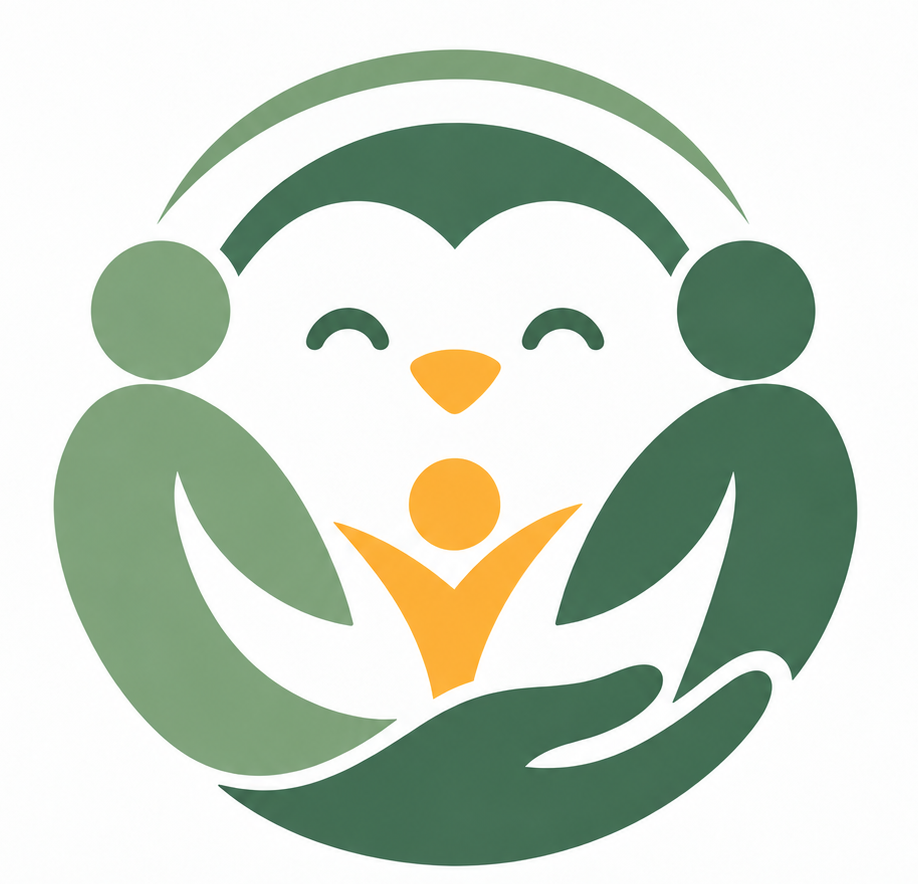
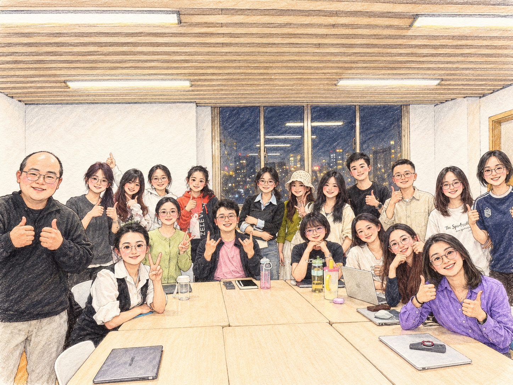

我们关注家庭、同伴、老师甚至 AI 如何塑造儿童青少年的情绪、社交、道德、价值观与心理健康。

实验室合影 · 待补充任智发展实验室，华东师范大学心理与认知科学学院与教育学部联合团队，由刘俊升教授、任慧广副教授共同指导。
我们致力于研究家庭、同伴、教师、AI 等对儿童青少年社会情绪能力、社交、道德、价值观、心理健康的影响。实验室采用追踪研究、实验干预、计算建模等方法，致力于探索和理解严苛的社会化反馈、AI 情感联结、道德完美主义、校园欺凌等现实议题，如何在儿童与青少年身上留下痕迹。
如果你对儿童青少年社会化过程研究感兴趣，欢迎通过以下方式加入或关注任智发展实验室：
有意加入实验室、申请研究助理、咨询研究生招生或洽谈学术合作，请直接发送邮件至以下邮箱，我们会在 2–3 个工作日内回复：
hgren@dep.ecnu.edu.cn